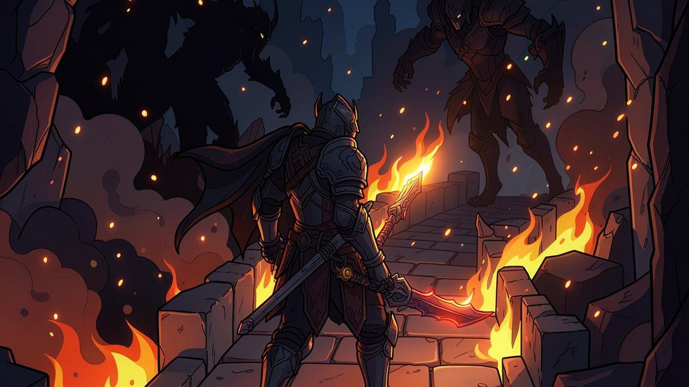
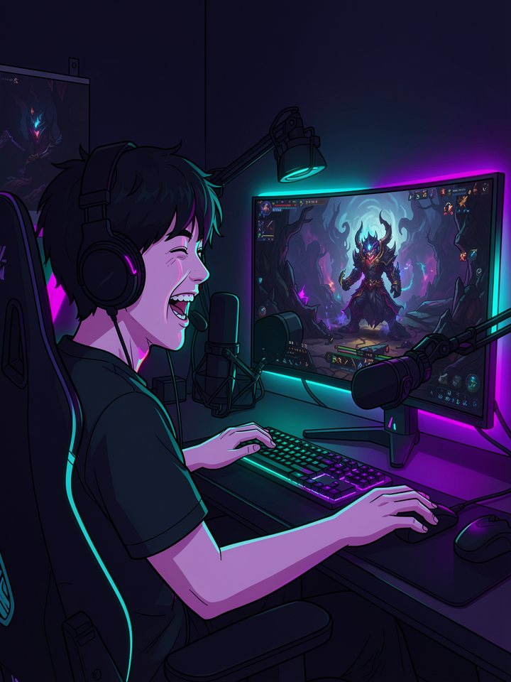
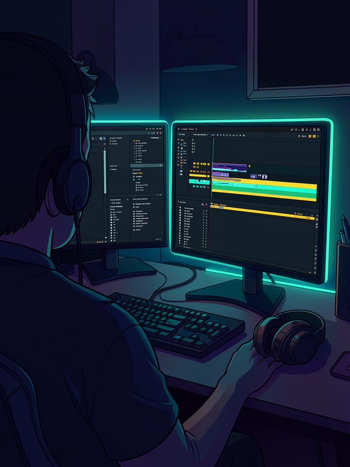

실제 모습



* AI로 연출된 예시 화면입니다
유튜브, 치지직, SOOP, 트위치 다시보기 URL을 입력
원하는 하이라이트 영상 길이를 분 단위로 지정
프로그램이 자동으로 하이라이트를 추출해 저장
소리 피크와 채팅 반응을 동시 분석해 하이라이트 선정
faster-whisper로 한국어·영어 자막 자동 생성
소리 지르는 순간 중앙에 큰 노란 자막으로 강조
원하는 영상 길이를 정하면 정확하게 맞춰 자름
GPU 인코딩으로 빠른 영상 변환
캠/버튜버 얼굴 자동 감지 및 클로즈업·펀치인
인스타그램 릴스, 틱톡, 유튜브 쇼츠 자동 포맷
무음 구간 자동 감지 및 제거

소리와 채팅이 함께 터지는 순간을 자동으로 찾아냅니다

몇 시간짜리 다시보기를 몇 분짜리 하이라이트로 정리합니다
* AI로 연출된 예시 이미지입니다
이 프로그램은 사람의 편집을 대체하지 못합니다. 편집이 어려운 초보 스트리머의 첫 편집 도구, 또는 1차 초안(가편집)을 빠르게 뽑고 싶은 사람을 위한 프로그램입니다. 취미 프로젝트로 꾸준히 유지보수 중입니다.
네, 완전 무료입니다. 오픈소스(MIT 라이선스)이므로 소스 코드도 공개되어 있습니다. 광고나 구독료 없습니다.
아니요. GitHub에서 ZIP 파일을 내려받고 압축을 푼 후 '요약기_실행.bat' 파일을 실행하면 됩니다. 별도 설치 불필요.
유튜브, 치지직, SOOP(아프리카), 트위치의 다시보기 URL을 지원합니다. 각 플랫폼의 공개 다시보기만 가능합니다.
네, 됩니다. 언어 옵션에서 'en'을 입력하면 영어 음성 인식 및 자막이 생성됩니다.